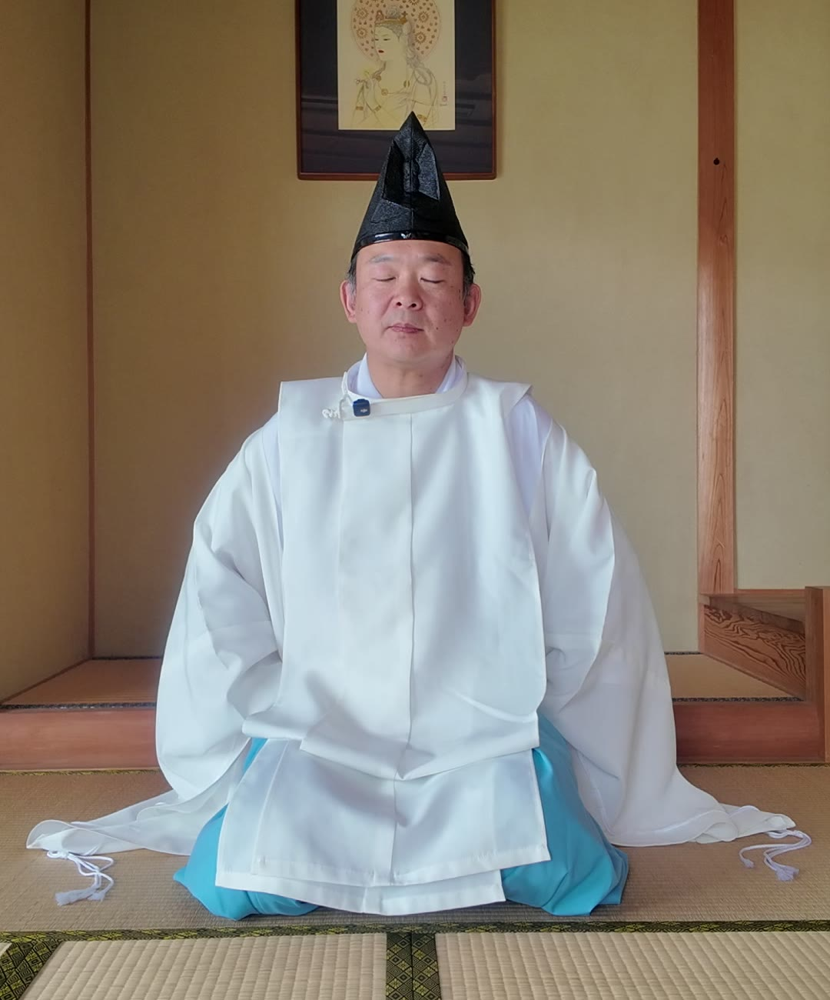
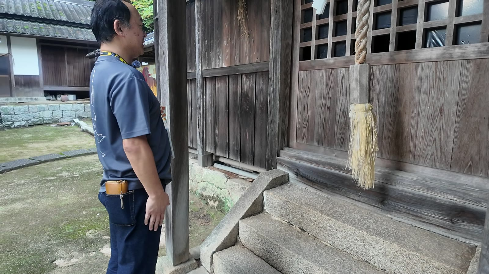
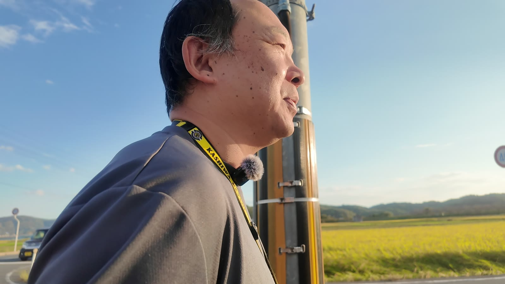
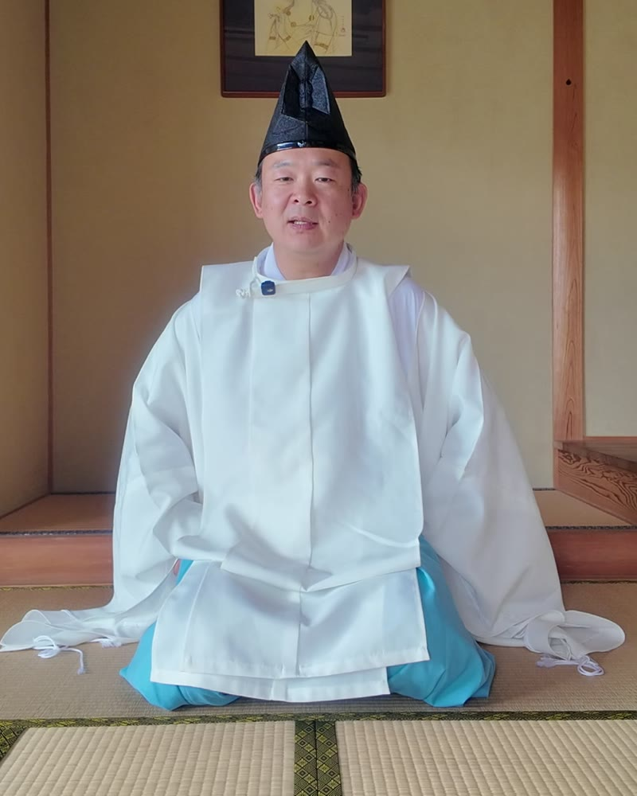

MAIN MENU
SEITAI
出張整体
家業の接骨院から数えて25年、体に向き合ってきました。いまは店舗を持たず、お客様のもとへ伺っています。大会を控えたダンサーの方など、体を使う方にも続けて通っていただいています。
- 施術時間
- 40分前後（目安）
- 伺う先
- お客様のもとへ（場所はご相談ください）
- 出張エリア
- 準備中
- 料金
- 準備中

みんな、いきなり本殿に行って手を合わせる。でも神様からしたら「お前、誰？」。振り向いてもらえていないんです。受付にご挨拶して、地元から順に。そうしてやっと、神様がこちらを向いてくれる。
— 伊吹（インタビューより要約）伊吹は、神様の関係を会社や地域にたとえて説明します。右の図を、下から順にタップしてご挨拶してみてください。順番を飛ばすと、どうなるでしょう。
いちばん下の産土神から、ご挨拶をはじめましょう。
生まれた場所と、いま住んでいる場所を入れてください。産土神から伊勢まで、ご挨拶する神社を順番に出します。生年月日は要りません。
ここに、あなたのご挨拶ルートが
産土神から順に表示されます。
作法は、覚える決まりごとではありません。「よそのお宅にお邪魔したら、どうするか」を考えれば、自然と筋道が見えてきます。神主が実際にしている参拝の流れです。

手水舎も神様の場所。「お借りさせていただきます」と軽く会釈してから使います。
境内に祓戸の神様がいらっしゃれば、本殿より先にそちらで手を合わせます。
神主は二礼の前に軽く頭を下げ、「初めて来させていただきました」とご挨拶してから前に進みます。
上の六角を片手で持って軽く下に引き、綱をまっすぐにしてから鳴らすと、きれいに鳴ります。
諸説ありますが、伊吹は鳴らしてから。家主が出てくる前に手土産は渡しませんよね。
ピンポン鳴らして、家主が出てくる前に手土産渡すかって話なんです
お願いごとは具体的に。何を、いつまでに、どうなりたいのかを伝えます。
帰りは一歩下がり、「失礼しました」。お邪魔した家を出るときと同じです。
神主は神様にお尻を向けないよう、足の向きを工夫して一段ずつ。混んでいる日は、周りの迷惑にならないように。
日が昇ってお昼までが、いちばんエネルギーが強いと言われる時間。夕方に難しい会議を持ち込まれても、人間だって困ります。
やるやらないは自由。伊吹は日常の財布と分け、神社用の財布からお納めしています。
「お金イコール、自分の使った時間と命」
「金運の神社」に、欲だけを持って押しかける。神様からしたら、まず禊をしてから来なさい、と思っているはずです。

週末になると、宗教の集まりに連れて行かれた。見たいテレビも見られない。それでも「人に感謝しなさい」という教えだけは、なぜか心に残っていました。
代々続く接骨院の家に生まれ、父の背中を見て育つ。体を診る仕事は、今年で25年目になります。
治療を続けるほど、どうにもならない人が一定数いることに気づく。
「これ自分の力じゃどうにもなんねーな」
「きつい修行に入れば、不思議な力がもらえるんじゃないか」。神仏嫌いのまま、いちばん手っ取り早そうな滝行へ。冬の滝に通い続け、ひと冬を越えました。
お寺の修行の入口を探していたとき、出家したお客さんに言われた言葉。探すのをやめて2週間後、別のお客さんから修行の話が舞い込みます。
「覚悟が決まってそのタイミングがくれば、自然と向こうから来るから」出家したお客さんの言葉
お寺での修行、3年通った山伏の修行。その先で神主の師匠と出会い、「来週までに装束を買ってこい」と覚悟を試されます。
店舗を持たない形に変え、困っている人がいれば各地へ出向けるように。一人で戦ってきた日々を経て、いまは仲間と新しい挑戦を始めています。
「箱がなくなったことが、自分の棚卸しになってる」
インタビューから切り出したショート動画です。タップすると音声つきで再生されます。
家業の接骨院から数えて25年、体に向き合ってきました。いまは店舗を持たず、お客様のもとへ伺っています。大会を控えたダンサーの方など、体を使う方にも続けて通っていただいています。

代々続く接骨院の家に生まれ、体を診る仕事を25年続けてきた。40歳で滝行を始めたことをきっかけに、お寺の修行、山伏の修行を経て神主に。いまは師匠のもとで、地方での祭祀を任されています。
普段は初対面で気をつかう性格。装束を着るとスイッチが入る。「自分が言えば言うほど胡散臭くなるから」と、不思議な話は自分からはあまりしません。
公式LINEでは、神主が実際にしている参拝の順序と作法をまとめてお届けする予定です。出張整体のご予約や、ご祈祷・家祓い・護摩行のご相談も、LINEから受け付けます。